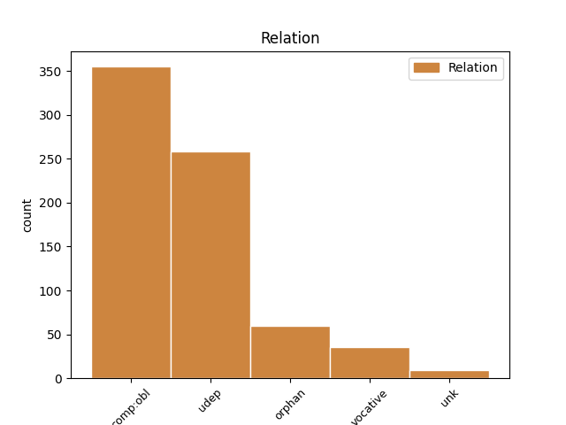
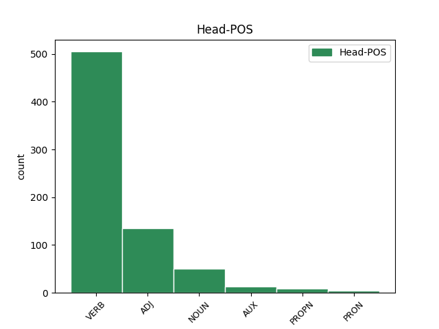
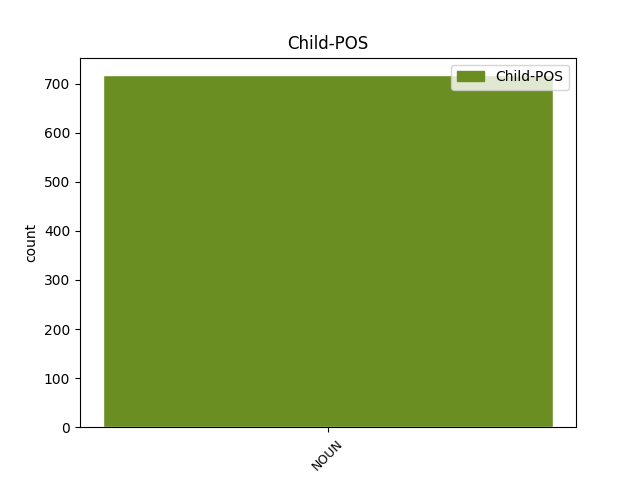

Distribution of features within this leaf



Agreement Rules sorted by frequency.
- When the dependent token is the oblique complements(comp:obl) of the head token, and the dependent token is NOUN.
1 гражане _ _ _ _ 0 _ _ _
2 же _ _ _ _ 0 _ _ _
3 по _ _ _ _ 0 _ _ _
4 ꙋлицамъ _ _ _ _ 0 _ _ _
5 и _ _ _ _ 0 _ _ _
6 по _ _ _ _ 0 _ _ _
7 дворамъ _ _ _ _ 0 _ _ _
8 не _ _ _ _ 0 _ _ _
9 покарѧющим покаряти VERB V- Case=Dat|Gender=Masc|Number=Plur|Strength=Weak|Tense=Pres|VerbForm=Part|Voice=Act 0 _ _ _
10 сѧ _ _ _ _ 0 _ _ _
11 тоурком турчинъ NOUN Nb Case=Dat|Gender=Masc|Number=Plur 9 comp:obl _ ref=317r2
12 но _ _ _ _ 0 _ _ _
13 бьꙗхꙋ _ _ _ _ 0 _ _ _
14 сѧ _ _ _ _ 0 _ _ _
15 с _ _ _ _ 0 _ _ _
16 ними _ _ _ _ 0 _ _ _
1 и _ _ _ _ 0 _ _ _
2 бѣ _ _ _ _ 0 _ _ _
3 слышати _ _ _ _ 0 _ _ _
4 трескотъ _ _ _ _ 0 _ _ _
5 и _ _ _ _ 0 _ _ _
6 сътренїе _ _ _ _ 0 _ _ _
7 тоуръ _ _ _ _ 0 _ _ _
8 и _ _ _ _ 0 _ _ _
9 вопль _ _ _ _ 0 _ _ _
10 и _ _ _ _ 0 _ _ _
11 стонанїе _ _ _ _ 0 _ _ _
12 людʼское _ _ _ _ 0 _ _ _
13 страшно _ _ _ _ 0 _ _ _
14 ꙗко _ _ _ _ 0 _ _ _
15 ѡбѣма _ _ _ _ 0 _ _ _
16 бежати _ _ _ _ 0 _ _ _
17 гражане гражанинъ NOUN Nb Case=Nom|Gender=Masc|Number=Plur 0 _ _ _
18 ꙋбо _ _ _ _ 0 _ _ _
19 сʼ _ _ _ _ 0 _ _ _
20 стѣны _ _ _ _ 0 _ _ _
21 въ _ _ _ _ 0 _ _ _
22 градʼ _ _ _ _ 0 _ _ _
23 а _ _ _ _ 0 _ _ _
24 тоуркы турчинъ NOUN Nb Case=Nom|Gender=Masc|Number=Plur 17 orphan _ ref=297v14
25 ѿ _ _ _ _ 0 _ _ _
26 града _ _ _ _ 0 _ _ _
27 далече _ _ _ _ 0 _ _ _
1 Не _ _ _ _ 0 _ _ _
2 было быти AUX V- Aspect=Res|Case=Nom|Gender=Neut|Number=Sing|Strength=Strong|VerbForm=Part|Voice=Act 0 _ _ _
3 онъ _ _ _ _ 0 _ _ _
4 обидѣ _ _ _ _ 0 _ _ _
5 порождено _ _ _ _ 0 _ _ _
6 ни _ _ _ _ 0 _ _ _
7 соколу _ _ _ _ 0 _ _ _
8 ни _ _ _ _ 0 _ _ _
9 кречету _ _ _ _ 0 _ _ _
10 ни _ _ _ _ 0 _ _ _
11 тебѣ _ _ _ _ 0 _ _ _
12 чръный _ _ _ _ 0 _ _ _
13 воронъ воронъ NOUN Nb Case=Nom|Gender=Masc|Number=Sing 2 vocative _ ref=41
14 поганый _ _ _ _ 0 _ _ _
15 половчине _ _ _ _ 0 _ _ _
1 тъгда _ _ _ _ 0 _ _ _
2 хв҃ъ _ _ _ _ 0 _ _ _
3 воинъ _ _ _ _ 0 _ _ _
4 ишедъ ити VERB V- Case=Nom|Gender=Masc|Number=Sing|Strength=Strong|Tense=Past|VerbForm=Part|Voice=Act 0 _ _ _
5 из _ _ _ _ 0 _ _ _
6 домѹ _ _ _ _ 0 _ _ _
7 своѥго _ _ _ _ 0 _ _ _
8 ꙗко _ _ _ _ 0 _ _ _
9 птица пътица NOUN Nb Case=Nom|Gender=Fem|Number=Sing 4 udep _ ref=11
10 ис _ _ _ _ 0 _ _ _
11 прѹгла _ _ _ _ 0 _ _ _
12 истьргъши _ _ _ _ 0 _ _ _
13 сꙗ _ _ _ _ 0 _ _ _
14 или _ _ _ _ 0 _ _ _
15 ꙗко _ _ _ _ 0 _ _ _
16 сьрна _ _ _ _ 0 _ _ _
17 отъ _ _ _ _ 0 _ _ _
18 тенета _ _ _ _ 0 _ _ _
Disagree Examples:
1 да _ _ _ _ 0 _ _ _
2 вѣсть _ _ _ _ 0 _ _ _
3 дали дати VERB V- Aspect=Res|Case=Nom|Gender=Masc|Number=Plur|Strength=Strong|VerbForm=Part|Voice=Act 0 _ _ _
4 в _ _ _ _ 0 _ _ _
5 хазъторокани _ _ _ _ 0 _ _ _
6 цр҃ю цѣсарь NOUN Nb Case=Dat|Gender=Masc|Number=Sing 3 comp:obl _ ref=3
1 азътарханъ астраханъ PROPN Ne Case=Acc|Gender=Masc|Number=Sing 0 _ _ _
2 по _ _ _ _ 0 _ _ _
3 мсцꙋ _ _ _ _ 0 _ _ _
4 ночи _ _ _ _ 0 _ _ _
5 парꙋосом парусъ NOUN Nb Case=Ins|Gender=Masc|Number=Sing 1 udep _ ref=3
1 и _ _ _ _ 0 _ _ _
2 ѡны _ _ _ _ 0 _ _ _
3 его _ _ _ _ 0 _ _ _
4 взѧли възяти VERB V- Aspect=Res|Case=Nom|Gender=Masc|Number=Plur|Strength=Strong|VerbForm=Part|Voice=Act 0 _ _ _
5 часа часъ NOUN Nb Case=Gen|Gender=Masc|Number=Sing 4 udep _ ref=3
6 того _ _ _ _ 0 _ _ _
1 а _ _ _ _ 0 _ _ _
2 бол꙽шимъ _ _ _ _ 0 _ _ _
3 есмѧ _ _ _ _ 0 _ _ _
4 сѹдном судьно NOUN Nb Case=Ins|Gender=Neut|Number=Sing 5 udep _ ref=3
5 дошли доити VERB V- Aspect=Res|Case=Nom|Gender=Masc|Number=Plur|Strength=Strong|VerbForm=Part|Voice=Act 0 _ _ _
6 до _ _ _ _ 0 _ _ _
7 морѧ _ _ _ _ 0 _ _ _
1 и _ _ _ _ 0 _ _ _
2 билъ бити VERB V- Aspect=Res|Case=Nom|Gender=Masc|Number=Sing|Strength=Strong|VerbForm=Part|Voice=Act 0 _ _ _
3 есми _ _ _ _ 0 _ _ _
4 челѡм чело NOUN Nb Case=Ins|Gender=Neut|Number=Sing 2 comp:obl _ ref=4
5 василью _ _ _ _ 0 _ _ _
6 папинѹ _ _ _ _ 0 _ _ _
7 да _ _ _ _ 0 _ _ _
8 послѹ _ _ _ _ 0 _ _ _
9 ширвашинѹ _ _ _ _ 0 _ _ _
10 асан _ _ _ _ 0 _ _ _
11 бегѹ _ _ _ _ 0 _ _ _
12 что _ _ _ _ 0 _ _ _
13 есмѧ _ _ _ _ 0 _ _ _
14 с _ _ _ _ 0 _ _ _
15 нимъ _ _ _ _ 0 _ _ _
16 пришли _ _ _ _ 0 _ _ _
17 чтобы _ _ _ _ 0 _ _ _
18 сѧ _ _ _ _ 0 _ _ _
19 печаловалъ _ _ _ _ 0 _ _ _
20 ѡ _ _ _ _ 0 _ _ _
21 людех _ _ _ _ 0 _ _ _
22 что _ _ _ _ 0 _ _ _
23 их _ _ _ _ 0 _ _ _
24 поимали _ _ _ _ 0 _ _ _
25 под _ _ _ _ 0 _ _ _
26 тархы _ _ _ _ 0 _ _ _
27 каитаки _ _ _ _ 0 _ _ _